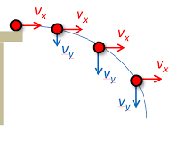
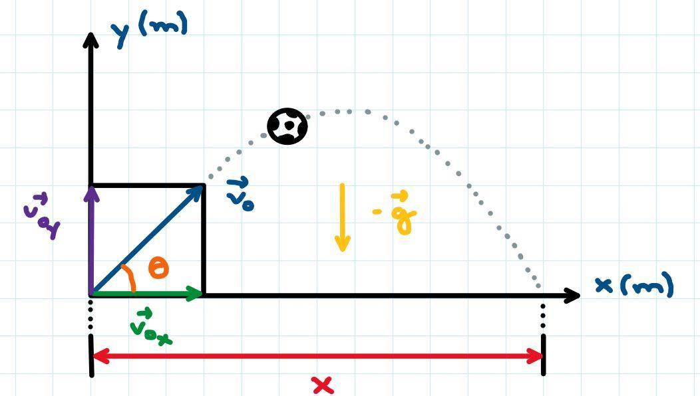

Para começarmos nossos estudos sobre os lançamentos horizontal e oblíquo no vácuo, todos devemos ter uma noção básica sobre movimento uniforme (MRU), movimento uniformemente variado (MRUV):
{kind=link}
e vetores:
Como o foco deste site não é esse, deixei algumas video aulas para os que ainda não entendem dos assuntos listados.
Agora que você já conhece o básico, vamos introduzir o assunto de nosso interesse. Primeiramente, vamos definir o Lançamento Horizontal.
Lançamento Horizontal é a situação aonde um corpo inicia sua trajetória com uma velocidade horizontal (constante) e no instante seguinte cai sob efeito da gravidade, tendo, agora, uma velocidade resultante da soma dos vetores: velocidade horizontal (Vx) e velocidade vertical (Vy). Observe o exemplo mais clássico que existe, a bola caindo da mesa:
Imagem retirada daqui.
Já o Lançamento Oblíquo, é iniciado com o arremesso de um corpo formando determinado ângulo com o eixo X, desempenhando um trajeto em forma de parábola, aonde ele sobe e desce (MRUV) ao mesmo tempo que se desloca horizontalmente (MRU). A trajetória de uma bola de futebol descreve perfeitamente esse lançamento, observe logo abaixo:
Imagem retirada daqui.
Agora, você está totalmente preparado para se aprofundar nos lançamentos, guerreiro!
| Lançamento Horizontal | Lançamento Oblíquo | Vetores | |
|---|---|---|---|
| MRU | X=X₀+VxT | A=VxT | - |
| MRUV | Vy²=-2G▲y | Vy²=V₀²-2G▲y | - |
| Vy=-GT | Vy=V₀y-GT | - | |
| Y=Y₀-GT²/2 | Y=V₀yT-GT²/2 | - | |
| Soma | - | - | Vs²=A²+B²+2ABcosΘ |
| Decomposição | - | - | Vy=VsenΘ |
| - | - | Vx=V₀cosΘ |